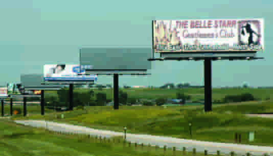
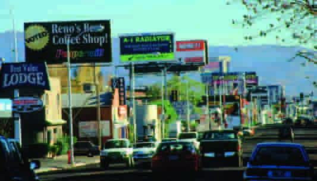
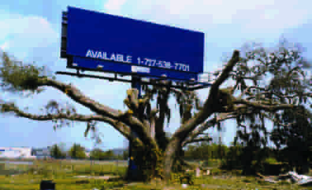
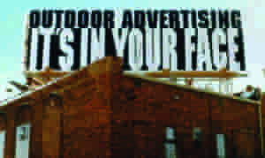
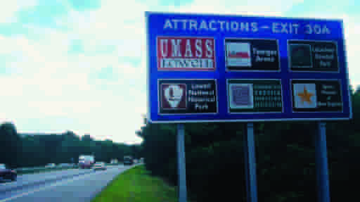

Unleashing the Streets: The Wild World of Guerrilla Advertising
From billboards to graffiti to guerrilla marketing, civic and commercial interests have long fought to control the visual environment of the city. Today the contest is more heated than ever.
Guerrilla advertising happens in the gray zone between what’s maybe legal and downright illegal, and between what’s frowned upon by the advertising industry and what works on the street. The relationship between advertisers and the street teams they employ (often through a marketing agency) is typically a “see-no-evil, hear-no-evil” sort of deal. The teams agree to spread the word about the brand in “innovative ways,” without getting into much detail about those ways. 1
Street teams can be arrested and charged with vandalism, but usually police choose to ignore both the teams and the companies that unofficially commission them. In our case, we learned months later that the Rottweilers were promoting Viacom, which was then rolling out a reboot of its MTV2 channel. Guerrilla marketing didn’t begin at the turn of the millennium — that’s just when it acquired a name. In fact, it’s part of a long history of urban streets and public spaces being covered with — or defaced by, depending on your point of view — visual information of all sorts, from political posters to municipal notices to commercial signage to corporate advertising to those Janus-headed dogs. This history underscores the long-running battle between civic and commercial interests for control of city streets and their surfaces — a contest that remains very much alive in our own era of proliferating media and consolidating corporate control.
19th London, the archaic and ad-hoc practices of posting signs and public notices and the ruthless business of commercial advertising
When the British journalist Henry Sampson published his 600-page History of Advertising from the Earliest Times, in 1874, London was in a period of tumultuous and often chaotic growth. The population had doubled since the turn of the century; slums were crowded, crime was rising. And industry was booming. Factories were producing huge quantities of goods, and traders were eager to market and sell their products. All around the city the archaic and ad-hoc practices of posting signs and public notices had given way to the new and increasingly ruthless business of commercial advertising. Sampson’s book traces a long history of advertising, from signs carved in stone tablets, in imperial Rome, and written on papyrus, in Thebes; to early Christian scrolls and medieval town criers; to shingles hung outside shops and inns, often with pictograms showing the services offered inside (“a knife for the cutler, a stocking for the hosier, a hand for the glover, a pair of scissors for tailor, a bunch of grapes for the vintner”). But he devotes particular attention to his own era, when outdoor advertising was becoming an issue of keen civic concern due to what critics deplored as the psoriatic-like profusion of posters across the teeming metropolis. As Sampson notes, street advertising was “a comparatively modern institution,” enabled at once by increased literacy and advances in printing techniques. “It was not until printing became general, and until the people became conversant with the mysteries of reading and writing,” he writes, “that posters and handbills were to any extent used.” 2 graffittie
Billboard companies sell something they don’t own – our field of vision and turn it into "anyplace"
In modern era, The posters are scaled up into billboards.
The billboards are now everywhere in the cities.
Billboards look the same whether they are in Mississippi, Montana, or Malaysia.
As a result, billboards homogenize our communities.
They help turn unique places into “Anyplace.”
In fact, almost nothing will destroy the distinctive character of a place faster than uncontrolled signs and billboards.
It's not only harm the locality but also your control over what to see.
There is a vast difference between seeing an ad – even the same ad – in a magazine, newspaper, on television, or on the internet. When you buy a magazine or turn on the television, you exercise freedom of choice. You can easily close the magazine or turn off the television. You can flip the page or turn the channel.
In contrast, you have no power to turn off or throw away a billboard. Twenty-four hours a day, 365 days a year, billboards force advertising on individuals and communities whether they want it or not. Billboards are placed so you can’t avoid seeing them. Try closing your eyes while driving down a road lined with billboards and you’ll wreck your car.This is how the billboard industry sells space. They tell advertisers billboards give them more “control” over consumers. They claim the ability to “grab your attention” and rub your nose in advertising.
Courts have long held that billboards do not derive their value from the private land they stand on, but from the public roads they stand next to. Courts call this the “parasite principle” – because billboards feed like a parasite off roads they pay almost nothing to build, use, or maintain.
To understand this, imagine that every billboard in America was turned around so that the message could not be seen from the road. The billboards would suddenly be worthless. Their only value comes from their ability to be seen from public roads. Billboard companies charge advertisers based on the circulation of the road. The higher the traffic count, the higher the ad revenue.
Next time you drive on a toll road lined with billboards, consider how you’re being charged to use the road, while the ad company, typically is not. As former California Governor Pat Brown once said: “When a man throws an empty cigarette package from a car, he is liable to a fine, but when a man throws a billboard across a view, he is richly rewarded.”
Courts have long held that billboards do not derive their value from the private land they stand on, but from the public roads they stand next to. Courts call this the “parasite principle” – because billboards feed like a parasite off roads they pay almost nothing to build, use, or maintain.
The urban blight from billboards
Billboards are a cause of urban blight because they degrade the urban environment, lower property values, and foster contempt for the public realm. They are a symptom of urban blight because one form of blight breeds another. Graffiti, trash, junk cars, billboards – where you find one you’ll usually find the other. What’s more, billboards are disproportionately located in low income neighborhoods. There are no billboards in Beverly Hills, Georgetown, Palm Beach, Scarsdale, or hundreds of other affluent communities. But drive into low-income neighborhoods in Chicago, Los Angeles, Miami, or any other big city and you will see neighborhoods saturated with billboards. As more of the world’s population moves into cities, there is a growing need for places of respite from the chaos and clutter of urban life.
    
Urban rain (no date) NASA. Available at: https://earthobservatory.nasa.gov/features/UrbanRain/urbanrain.php (Accessed: 16 October 2023).